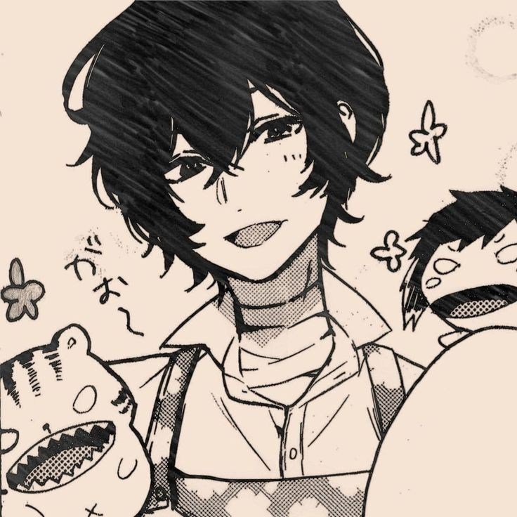

hello everyone this is ishika here and to be honest its been few days only for me learning this programming things and this is my first werbsite using html and css. i am 12th cbse paasout 2024-25 and yeah i am gonna pursue my major in computer science and before my college start in july second week in these holidays i am thinking to start learning coding in advance so yeah this is my story for now stay tuned for more.
to be honest i was really scared before that will i be able to do this or am i just not capable of it you see i love watching people doing coding it sounds cool to me as far as its not on me. yeah i am really happy to enter in this field its not that hard as i think of it i wanna be best in this because why not?!
lets explore more in this i think i did great work idk i guess so. but well keeping in mind that this is my first website its a really great work. and make the best website in future well thats it i guess to know more about me just click the above button of about me . thank you for veiwing my website.
1) I really love this chracterin anime (also my current pfp ) :

Bungo Stray Dogs (Japanese: 文豪ストレイドッグス, Hepburn: Bungō Sutorei Doggusu, lit. 'Literary Stray Dogs'), also abbreviated as B-S-D, is a Japanese manga series written by Kafka Asagiri and illustrated by Sango Harukawa, which has been serialized in Kadokawa Shoten's seinen manga magazine Young Ace since 2012. Each character is named after influential authors throughout history, and their powers are based on said author's books. The series follows the members of the Armed Detective Agency as they try to protect Yokohama from organizations such as the Port Mafia. The story mainly focuses on the weretiger Atsushi Nakajima, who joins others gifted with supernatural powers to accomplish different tasks including solving mysteries and carrying out missions assigned by the agency.